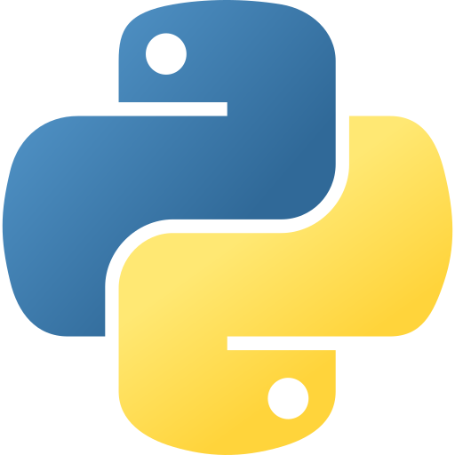

Hi, I'm Daryl

Pharmacy graduate with a Computer Science minor.
I am inspired to drive healthcare innovation by bridging clinical knowledge, industry innovation, and data-driven insights.
In my free time, I enjoy learning and building new things. I also love sports, travelling and hiking!
Education
National University of Singapore
Bachelor of Pharmacy (Honours)
Hwa Chong Institution
GCE A Levels
Skills
- Languages
-

SQL, PySpark, Bash - Data
- Data profiling, exploratory data analysis, data quality monitoring, anomaly detection, data structures and algorithms, Excel
- Cloud and tooling
- GitHub, AWS, Docker
- AI/ML
- TensorFlow, Keras, PyTorch, Scikit-learn